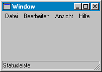

Hilfe
ActivateWindow

Aufruf
Parameter
Rückgabewert
Beschreibung
Beispiel
Siehe auch
ActivateWindow win
Parameter
| win | Handle eines Fensters |
Rückgabewert
-
Beschreibung
Die Anweisung ActivateWindow wählt ein anderes BB-Fenster aus. Dazu wird die Identität dieses Fensters benötigt. Mit ActiveWindow kann dagegen das aktive Fenster ermittelt werden.
kann dagegen das aktive Fenster ermittelt werden.

Diese Anweisung funktioniert nur mit einem BlitzBasic-Fenster. Andere Anwendungen lassen sich so nicht auswählen!
Beispiel
Standardbeispiel:
;Hier werden zwei Fenster erstellt und abwechselnd aktiviert:
window1=CreateWindow("Win1",050,050,200,200,0,9)
window2=CreateWindow("Win2",100,100,200,200,0,9)
Repeat
If GetKey()=27 Then End
If WaitEvent(200)=$803 Then End
mode=1-mode
If mode=0 Then ActivateWindow window1
If mode=1 Then ActivateWindow window2
Forever
window1=CreateWindow("Win1",050,050,200,200,0,9)
window2=CreateWindow("Win2",100,100,200,200,0,9)
Repeat
If GetKey()=27 Then End
If WaitEvent(200)=$803 Then End
mode=1-mode
If mode=0 Then ActivateWindow window1
If mode=1 Then ActivateWindow window2
Forever
Siehe auch